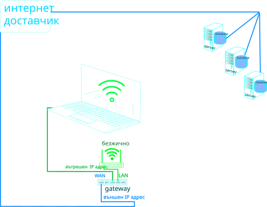

Системна администрация
Начална страница
Домейн контролер - управление и настройка
Бекъп и клониране на диск с Macrium
Настройка на SFTP и FTP сървър
Видеонаблюдение в отделена мрежа
Скриптове за копиране и преместване на файлове
Други настройки и трикове
Настройки на Google Workspace домейн
